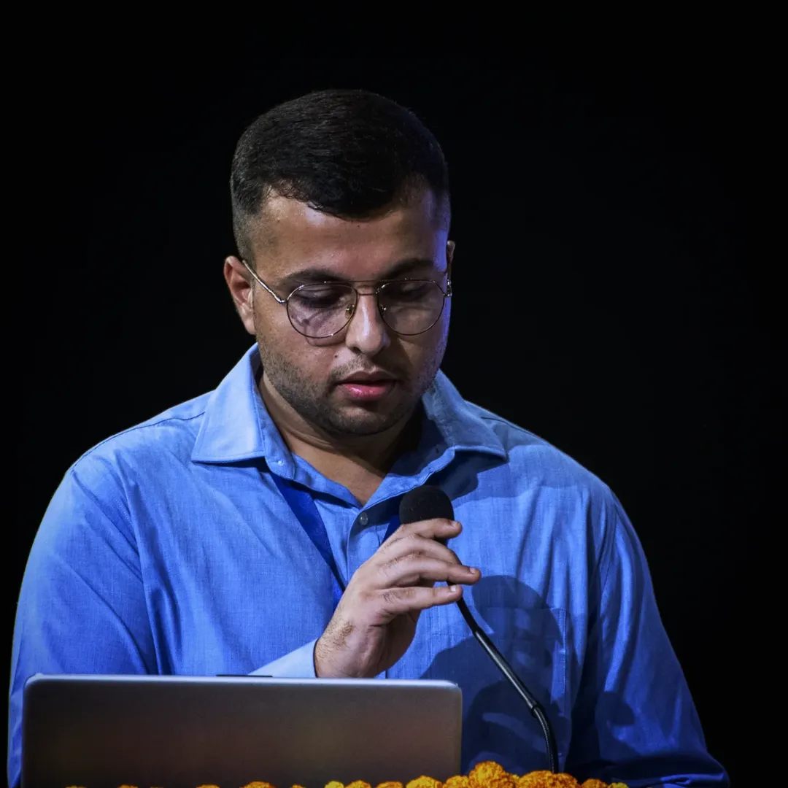

Sound Diplomacy in Indian Music
2018.02.02
Sound Diplomacy in Action: Teaching Indian Music as a Tool for Cultural Dialogue and International
Relations - Presented at National Research Seminar, organised by Pracheen Kala Kendra, Chandigarh
Huge reaction after Music Station appearance — RADWIMPS’ Noda praises Aimer as “a blanket when
you’re naked”
2016.06.22
Aimer, the mysterious singer whose identity had been largely unknown, made her first appearance on
TV Asahi’s “Music Station” on June 19. Her deep, unforgettable husky voice instantly became a hot
topic.
Although artists like Taka from ONE OK ROCK and Yojiro Noda from RADWIMPS have praised her voice,
her detailed profile has remained secret, with her appearance often obscured in artwork and live
performances.
Anticipation was high even before the show. In the broadcast, Noda’s description of her voice as
“comforting like a blanket when you’re naked” was shown, raising expectations even more.
Her performance, filled with the same dreamlike atmosphere seen in her live shows, received massive
response on social media. She topped Google Trends, surpassing even the show title “Music Station.”
Her songs also ranked highly on various digital platforms including iTunes and Recochoku.
After her debut TV appearance, excitement grew for her upcoming album “daydream,” releasing on
September 21, featuring contributions from Yojiro Noda, Taka, TK, Takahito Uchisawa (androp), Sukima
Switch, and more — all 13 tracks produced by top-tier artists.
Fans eagerly await Aimer’s next steps.